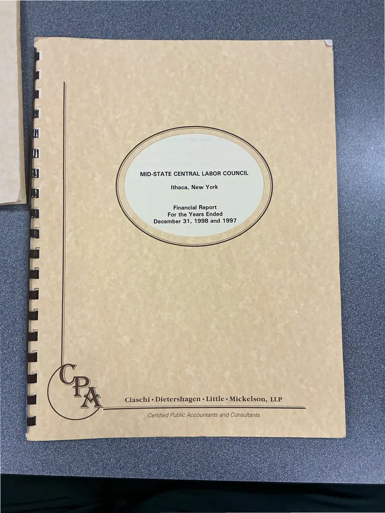
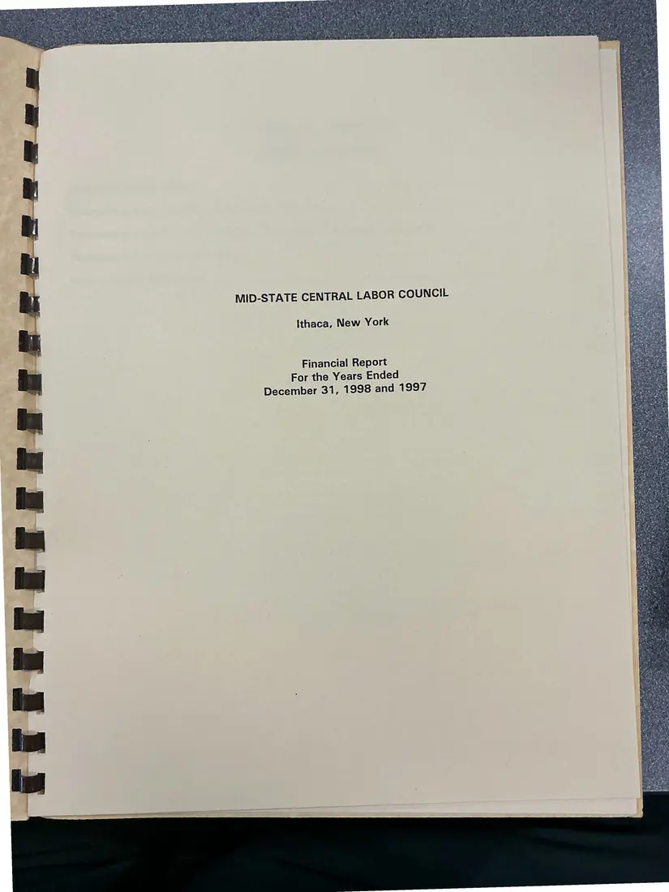
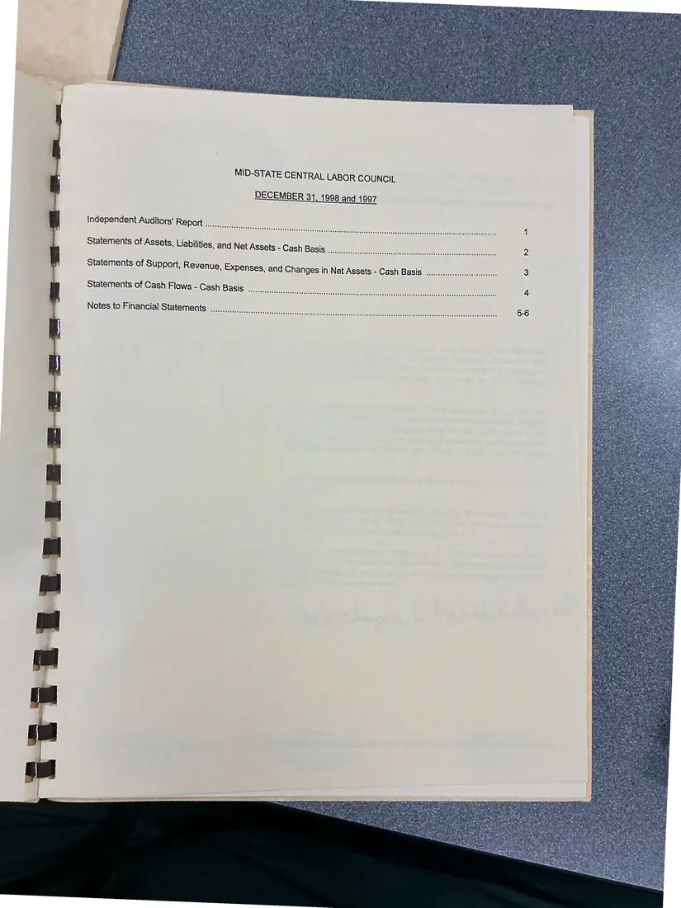
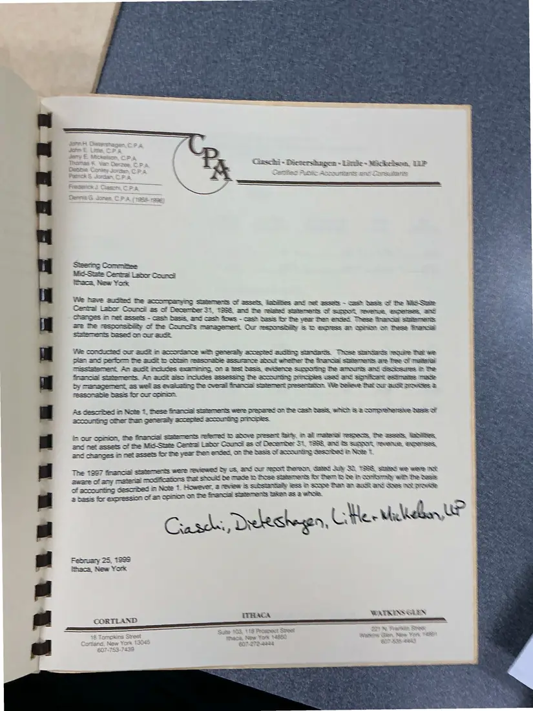
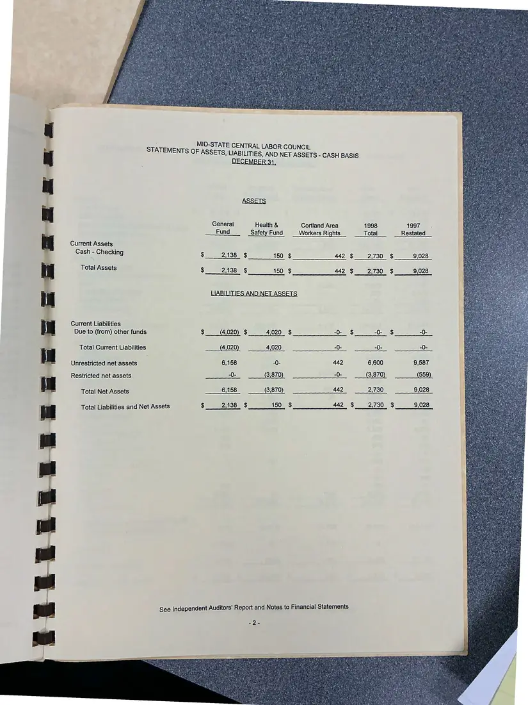
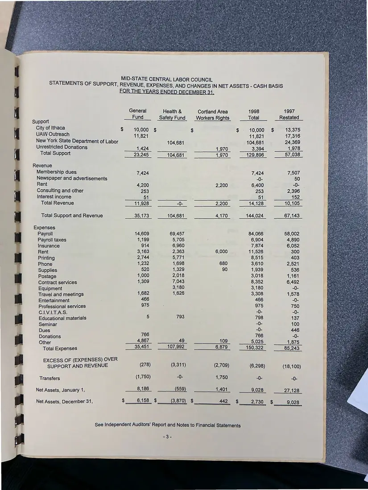
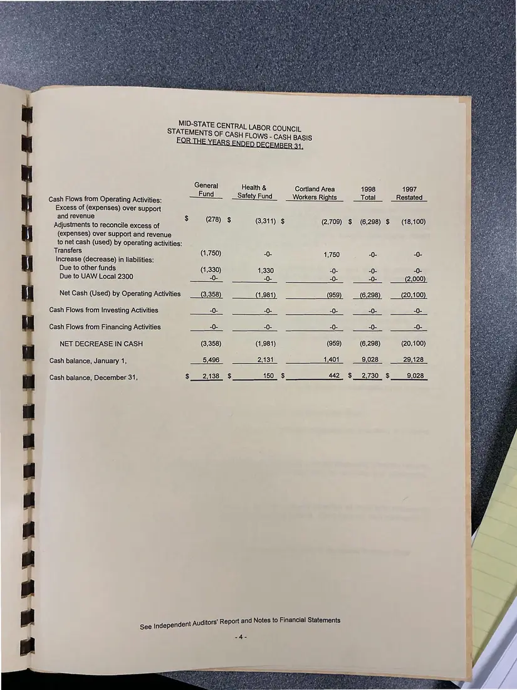
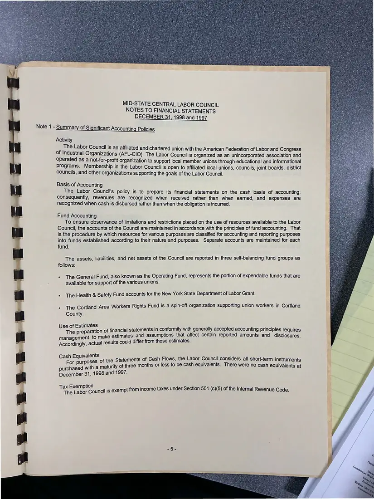
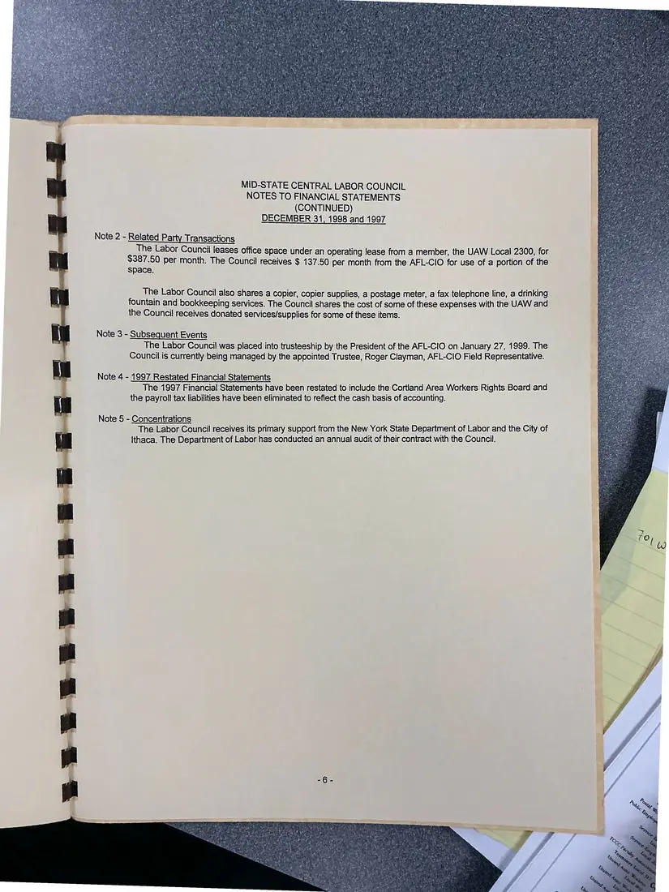

Financial report, 9 pages
Midstate Central Labor Council financial report, 1998 and 1997
Years ended December 31, 1998 and 1997 (report dated February 25, 1999)
Audited financial statements with the independent auditors' report (February 25, 1999), covering assets, support and expenses, cash flows, and notes. The pages were photographed back-to-front and are shown in reading order.
Download or cite this itemPages


(open zoom view)Read the page text (machine-read, mostly readable)
This text was generated automatically from the photograph and has not been corrected. The image is the authoritative record.
MID-STATE CENTRAL LABOR COUNCIL Ithaca, New York Financial Report For the Years Ended December 31, 1998 and 1997 Ciaschi - Dietershagen = Little» Mickelson, LLP ee —oo—eEeEeESESESESE>S>E>E>E—————— z= Certified Public Accountants and Consultants


(open zoom view)Read the page text (machine-read, mostly readable)
This text was generated automatically from the photograph and has not been corrected. The image is the authoritative record.
MID-STATE CENTRAL LABOR COUNCIL Ithaca, New York Financial Report For the Years Ended December 31, 1998 and 1997


(open zoom view)Read the page text (machine-read, many errors)
This text was generated automatically from the photograph and has not been corrected. The image is the authoritative record.
MID-STATE CENTRAL LABOR COUNCIL DECEMBER 31, 1998 and 1997 IY UG IS Independent Auditors’ Report TRON Hse ene eawereteanaesecenrey Be SSO Sra Or Tc Sorter rem UHL skeen ens ene Statements of Assets, Liabilities, and Net Assets - Cash Basis A Neen ee ene a we eeserenetnsueeaen ee Petnsusaeueserasss sens Statements of Support, Revenue, Expenses, and Changes in Net Assets - Cash Basis Statements of Cash Flows - Cash Basis Beene neevereraresnacucneeuntesnsceserers BEREEOO OOS OS COC UCKTSIO DS UGOUSUIRCET OCCHOSCGenooSaOSceoon Notes to Financial Statements Seeerereeneven Seat eenevesuneccceneneecetesesn PENRO ROY U Rem een veseseseteesenuressconsunctex


(open zoom view)Read the page text (machine-read, many errors)
This text was generated automatically from the photograph and has not been corrected. The image is the authoritative record.
2B. iaborke ~ Misc oaets LP STE UM pA trike oes Cimenseedtiere Oe Aik 1) (MY RA Bas OE £ 2 besis for expression of an Gummo Gr = We Tawe audited the accompanying Statements of assets hebiiti|es ond met assets - cash Sess of te We See Central Lebor Council es of December 31, S358, and the velsied Stiemects of sarmot revenue, expenses, and CHESS Mm Net assess - cash Sess, soc cosh Jes - cash Sess tr te veer fer ences These finemoia) Statements ae he respomstiity of he Coourci’s meregemest Our resmossiity & D eeess a coin on ese rcs Semen beset on cor ace We COndUCISS Our Sut in Sccorance wih genersly Sccsstes auditing StarGarcs. TROSS Sirtircs vequite Pat we Der Soon the audit m otter sesonabis assuretes stout wheter: fhe Gnantie Sistemas ae fee of mater TISSEISTIN Ap auch MOLGES SSGMINNS, O7 2 HE CESS, EYEE SuOHOTTE Te ETM ane GSK FO by managament, as wel as evening Ge overall francki ated gecnaiadinan was Antborn tal Ser aut groitines& Teasonebie bests for cur onrmon. As described in Note 7, these france! sistements were orenared on he Cash tesS whch © & Comp whenske Ress oF in our opinion, the financall sistements refeved b shove presect ery. im Sil TERN TESS, Te ase lenites and met assets of the Mid- State Central Letor Council es of Decemibe: camer 34, TS98, end Es SuNMoR Rens, Seranses, and changes in net assets for he year Den ences, on the bass of accounting Gesombed in Newe 1. statements were Teviewed Sy US, SNS Our Tent There, GENS Luly SO SSS, SERIES ee TS AT famearase modmicaions tret Should be made tose sutements briten Re ih Sonkaray wih The Rass However, 6 Teview is substantially ess in soone than Sn Suck aN Ges INE DRwWwee te frence! Setemerts ie S&S 2 woe. The 1927 ae Oh amy of accounting described in Note 1. Crasde. Deeks <2, Uve- Wide vr February 25, 1939 lthaca, New York WATAINSGLIEN | CORTLAND ATRENS GLEN


(open zoom view)Read the page text (machine-read, mostly readable)
This text was generated automatically from the photograph and has not been corrected. The image is the authoritative record.
a eke a jitsk M MID-STATE CENTRAL LABOR COUNCIL STATEMENTS OF ASSETS, LIABILITIES, AND NET ASSETS - CASH BASIS DECEMBER 31, ASSETS General Health & Cortland Area 1998 1997 . Fund Safety Fund Workers Rights Total Restated Current Assets Cash Checking $ 2,138 $ 150 $ 442 $ 2,730. $ 9,028 P Total Assets $2,138 § 150 $ 442 $2,730 $ 9,028 LIABILITIES AND NET ASSETS Current Liabilities Due to (from) other funds $ (4,020) $ 4,020 $ -0- $ -0- $ -0- Total Current Liabilities (4,020) 4,020 -0- -0- -0- Unrestricted net assets 6,158 -0- 442 6,600 9,587 | Restricted net assets == 3,870 -0- 3,870 559 i Total Net Assets 6,158 3,870 442 2,730, __-9,028 Total Liabilities and Net Assets $e 211380 o ee OO RES 442, $__ 2,730 $__— 9,028 Mind? sPipatee Ate aye See Independent Auditors' Report and Notes to Financial Statements


(open zoom view)Read the page text (machine-read, mostly readable)
This text was generated automatically from the photograph and has not been corrected. The image is the authoritative record.
STATEMENTS OF SUPPORT, Support City of Ithaca UAW Outreach New York State Department of Labor Unrestricted Donations Total Support Revenue Membership dues Newspaper and advertisements Rent Consulting and other Interest income Total Revenue Total Support and Revenue Expenses Payroll Payroll taxes Insurance Rent Printing Phone Supplies Postage Contract services Equipment Travel and meetings Entertainment Professional services C.LV.I.T.A.S. Educational materials Seminar Dues Donations Other Total Expenses EXCESS OF (EXPENSES) OVER SUPPORT AND REVENUE Transfers Net Assets, January 1, Net Assets, December 31, MID-STATE CENTRAL LABOR COUNCIL REVENUE, EXPENSES, AND CHANGES IN NET ASSETS - CASH BASIS FOR THE YEARS ENDED DECEMBER 34, General Fund Health & Safety Fund Cortland Area Workers Rights 1998 Total 1997 _Restated_ 10,000 $ 10,000 $ 11,821 11,821 104,681 3,394 129,896 _ 13,375 17,316 24,369 1,978 57,038 104,681 1,424 23,245 1,970 1,970 104,681 7,424 7,424 eos 6,400 7,507 2,39 137 100 446 1,87 766 4,867 35,451 __ 107,992 109 6,879 85,243 (278) (3,311) (2,709) (18,100) (1,750) -0- 1,750 559 8,186 401 $ 6158 $ 442 §$ See Independent Auditors’ Report and Notes to Financial Statements Sole


(open zoom view)Read the page text (machine-read, contains errors)
This text was generated automatically from the photograph and has not been corrected. The image is the authoritative record.
MID-STATE CENTRAL LABOR COUNCIL STATEMENTS OF C ASH FLOWS - CASH BASIS ee Health & Cortland Area 1998 1997 —fFund__ Safety 9 Restated Cash Flows from Operating Activities: ety Fund HEROS IN shite —total_ _Restated_ Excess of (expenses) over support and revenue (278) $ (3,311) $ (2,709) $ (6,298) $ (18,100) Adjustments to reconcile excess of (expenses) over support and revenue to net cash (used) by operating activities: Transfers (1,750) Increase (decrease) in liabilities: Due to other funds (1,330) 1,330 Due to UAW Local 2300 -0- -0- (2,000) Net Cash (Used) by Operating Activities (1,981) (20,100) Cash Flows from Investing Activities Cash Flows from Financing Activities NET DECREASE IN CASH (3,358) (1,981) (6,298) (20,100) Cash balance, January 1, 51496 eee 2 (1 i eee | 40 ee O O28 een 205 26 Cash balance, December 31, 2,138 Sip aars eo SOLED rates a 442 $__2,730_ $___9,028 Independent Auditors’ Report and Notes to Financial Statements See In


(open zoom view)Read the page text (machine-read, mostly readable)
This text was generated automatically from the photograph and has not been corrected. The image is the authoritative record.
MID-STATE CENTRAL LABOR COUNCIL NOTES TO FINANCIAL STATEMENTS DECEMBER 31, 1998 and 1997 Note 1 - Summary of Significant Accounting Policies Activity The Labor Council is an affiliated and charte eu red union with the American Federation of Labor and Congress of Industrial Organizations (AFL-CIO ). The Labor Council is organized as an unincorporated association and operated as a not-for-profit organization to support local member unions through educational and informational programs. Membership in the Labor Council is open to affiliated local unions, councils, joint boards, district councils, and other organizations supporting the goals of the Labor Council. Basis of Accounting The Labor Council's policy is to prepare its financial statements on the cash basis of accounting; consequently, revenues are recognized when received rather than when earned, and expenses are recognized when cash is disbursed rather than when the obligation is incurred. Fund Accounting To ensure observance of limitations and restrictions placed on the use of resources available to the Labor Council, the accounts of the Council are maintained in accordance with the principles of fund accounting. That is the procedure by which resources for various purposes are classified for accounting and reporting purposes into funds established according to their nature and purposes. Separate accounts are maintained for each fund. The assets, liabilities, and net assets of the Council are reported in three self-balancing fund groups as follows: The General Fund, also known as the Operating Fund, represents the portion of expendable funds that are available for support of the various unions. The Health & Safety Fund accounts for the New York State Department of Labor Grant. The Cortland Area Workers Rights Fund is a spin-off organization supporting union workers in Cortland County. stimates : rae ' ee a he eer of financial statements in conformity with generally accepted accounting principles requires management to make estimates and assumptions that affect certain reported amounts and disclosures. Accordingly, actual results could differ from those estimates. Sal ats of the Statements of Cash Flows, the Labor Council considers all short-term instruments purchased with a maturity of three months or less to be cash equivalents. There were no cash equivalents at December 31, 1998 and 1997. Te Oral is exempt from income taxes under Section 501 (c)(5) of the Internal Revenue Code.


(open zoom view)Read the page text (machine-read, mostly readable)
This text was generated automatically from the photograph and has not been corrected. The image is the authoritative record.
MID-STATE CENTRAL LABOR COUNCIL NOTES TO FINANCIAL STATEMENTS (CONTINUED) DECEMBER 31, 1998 and 1997 Note 2 - Related Party Transactions ; The Labor Council leases office space under an operating lease from a member, the UAW Local 2300, for 387.50 per month. The Council receives $ 137.50 per month from the AFL-CIO for use of a portion of the space. The Labor Council also shares a copier, copier supplies, a postage meter, a fax telephone line, a drinking fountain and bookkeeping services. The Council shares the cost of some of these expenses with the UAW and the Council receives donated services/supplies for some of these items. Note 3 - Subsequent Events The Labor Council was placed into trusteeship by the President of the AFL-CIO on January 27, 1999. The Council is currently being managed by the appointed Trustee, Roger Clayman, AFL-CIO Field Representative. Note 4 - 1997 Restated Financial Statements The 1997 Financial Statements have been restated to include the Cortland Area Workers Rights Board and the payroll tax liabilities have been eliminated to reflect the cash basis of accounting. Note 5 - Concentrations The Labor Council receives its primary support from the New York State Department of Labor and the City of Ithaca. The Department of Labor has conducted an annual audit of their contract with the Council.
See something wrong, or recognize a person or event? Send a correction. If you hold rights in this item or think it should not be public, write to the same address.